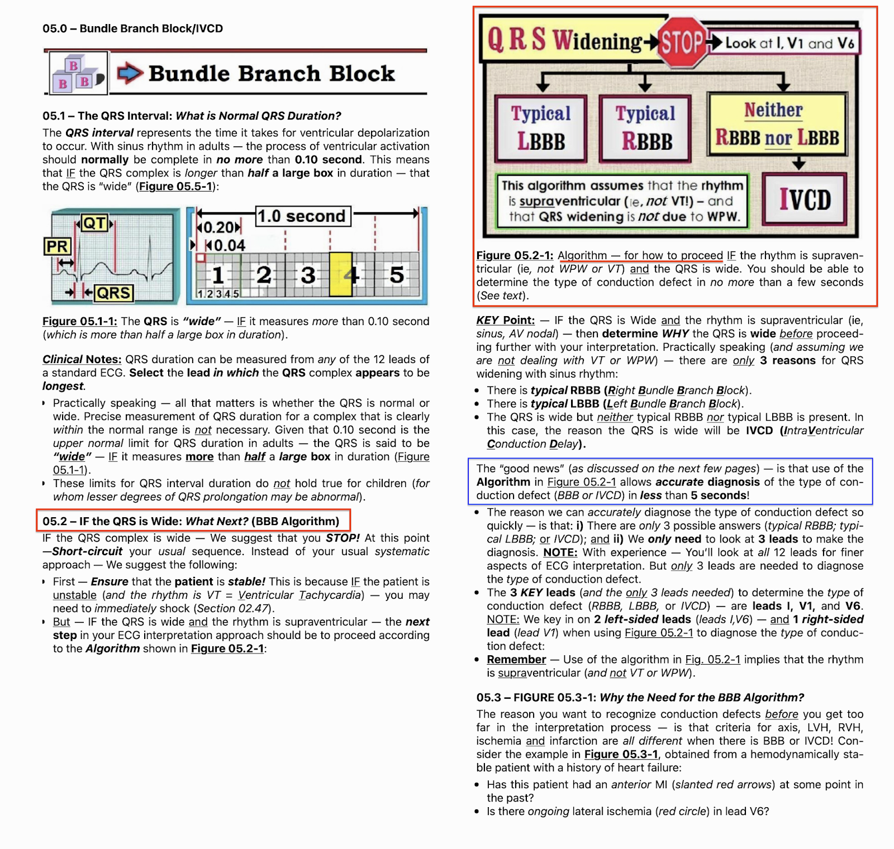
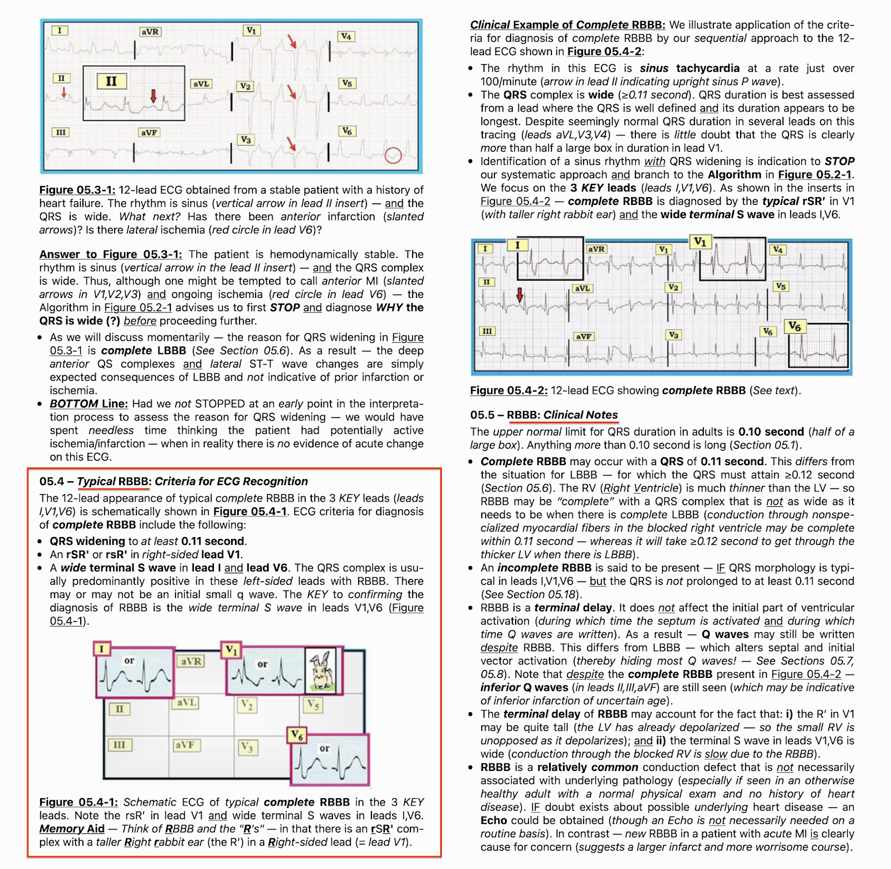
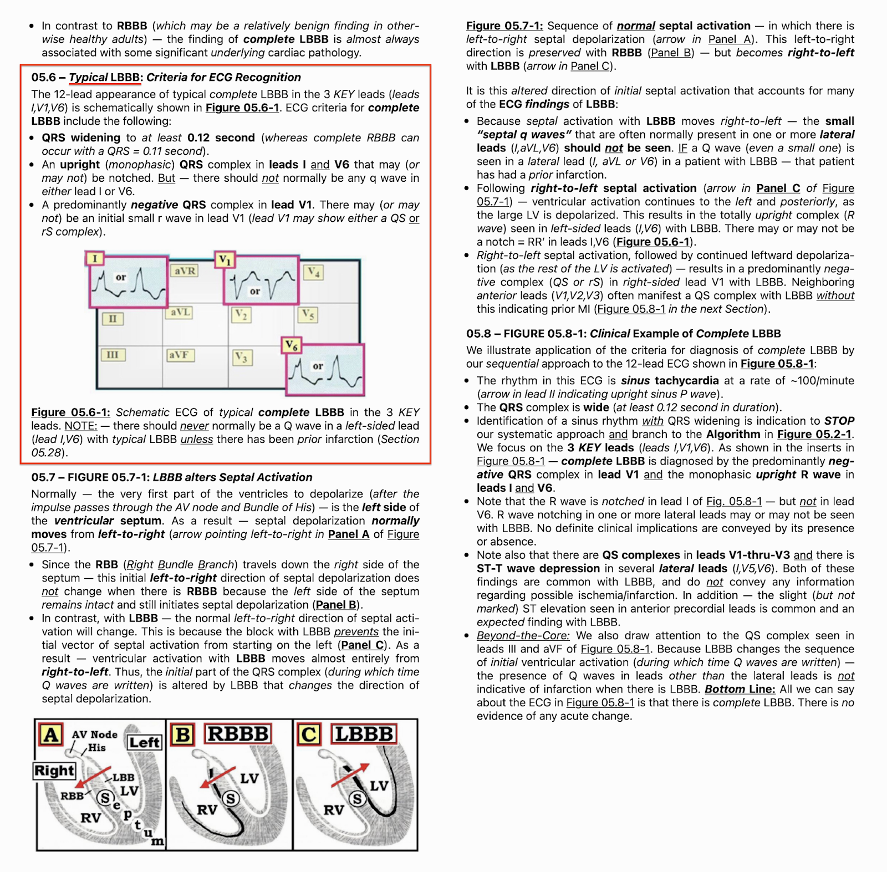
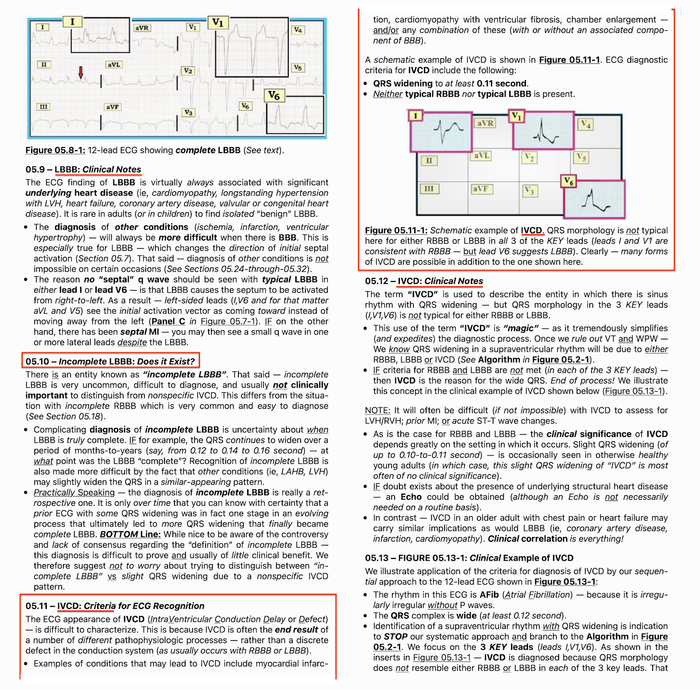
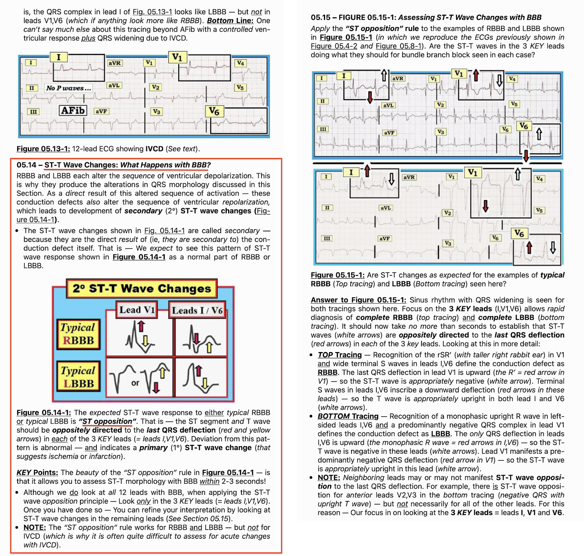
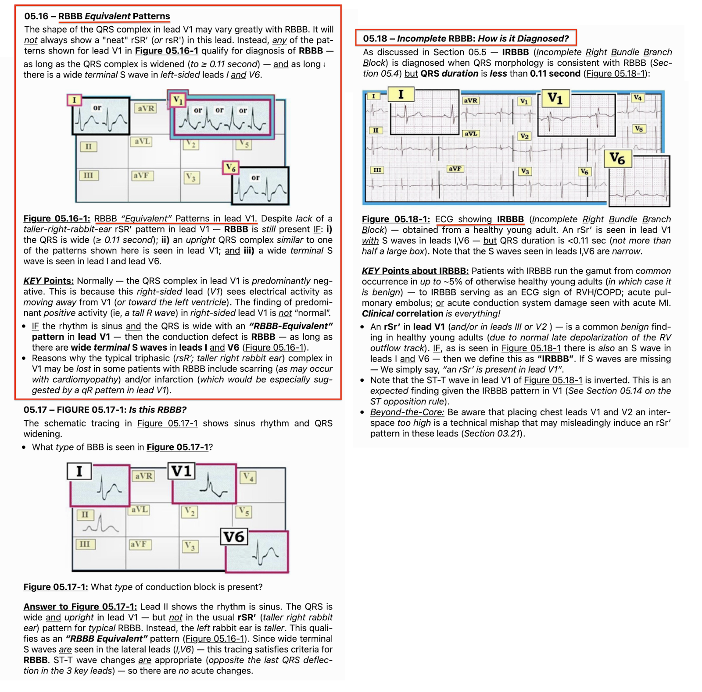

ECG Blog #293 — Nên nghi ngờ những chẩn đoán nào?
Bạn được xem điện tâm đồ ở Hình-1 — nhưng không có bất kỳ thông tin bệnh sử nào.
- BẠN sẽ đọc bản ghi này như thế nào?
- Bạn nghi ngờ những chẩn đoán lâm sàng nào?
=======================================
LƯU Ý #1: Tôi nhắc lại Video PEARL-22, có liên quan đến ca hôm nay. Một số bạn đọc có thể muốn xem Video Pearl này ngay lúc này trước khi đọc phần Suy nghĩ của tôi ở bên dưới về điện tâm đồ của ca hôm nay.
=======================================

ECG Media Pearl #22 (13:15 phút Video) hôm nay — Ôn lại một cách tiếp cận dễ dùng cho phép chẩn đoán các Blốc nhánh (BBB) trong chưa đầy 5 giây.
=======================================
LƯU Ý #2: Tôi đã trích một bản tóm tắt dạng chữ của Video Pearl hôm nay trong Phần bổ sung bên dưới (ở Hình-2 đến Hình-7).
- BẤM VÀO ĐÂY — để tải MIỄN PHÍ bản PDF của tài liệu 26 trang này về BBB (trích từ ECG-2014-ePub của tôi) — ôn lại những điều cơ bản trong chẩn đoán điện tâm đồ các Blốc nhánh (BBB) (bao gồm chẩn đoán nhồi máu cơ tim cấp & LVH khi có BBB).
=======================================
SUY NGHĨ CỦA TÔI về điện tâm đồ ở Hình-1:
Sẽ vô cùng hữu ích nếu biết bệnh sử lâm sàng của ca hôm nay. Dù vậy — đôi khi chúng ta được yêu cầu đọc điện tâm đồ mà không có bất kỳ thông tin bệnh sử nào, như trường hợp ở Hình-1. Suy nghĩ của tôi về bản ghi hôm nay như sau:
- Nhịp ở điện tâm đồ #1 nhanh, không đều — và có phức bộ QRS rõ ràng là rộng.
- Mặc dù có thấy các dao động biên độ nhỏ trên đường nền ở chuyển đạo II trong khoảng ngưng ngắn ở đầu bản ghi — không có sóng P nào xác định rõ ở bất kỳ chuyển đạo nào trong 12 chuyển đạo.
- Không chỉ đơn giản là không đều — nhịp ở Hình-1 là không đều hoàn toàn (irregularly irregular). Nghĩa là, dù trông “gần như đều” ở một số đoạn của bản ghi — quan sát kỹ xác nhận có những khác biệt nhỏ-nhưng-chắc-chắn về khoảng R-R từ nhát-này-sang-nhát-kế-tiếp trên suốt điện tâm đồ.
- NHẬN ĐỊNH: Mô tả trên xác định nhịp ở Hình-1 là AFib (rung nhĩ – Atrial Fibrillation), ở đây với đáp ứng thất nhanh (tần số trung bình trên 120/phút khá nhiều). Mặc dù VT (nhịp nhanh thất – Ventricular Tachycardia) không phải lúc nào cũng đều — VT hiếm khi không đều hoàn toàn như ta thấy ở đây khi hình dạng QRS không đổi trên suốt bản ghi. Do đó, nhịp ở Hình-1 là AFib kèm QRS giãn rộng và không phải VT.
Tiếp tục với Cách tiếp cận hệ thống của tôi:
Vì nhịp ở Hình-1 là trên thất và phức bộ QRS rộng — tiếp theo chúng ta cần xác định VÌ SAO QRS rộng trước khi đi tiếp theo cách tiếp cận hệ thống. Lý do là các tiêu chuẩn điện tâm đồ về trục, lớn các buồng tim và thiếu máu cục bộ/nhồi máu sẽ đều khác nhau, tùy theo loại rối loạn dẫn truyền (Xem Hình-2 đến -7 trong Phần bổ sung bên dưới).
- Hình dạng QRS của điện tâm đồ ở Hình-1 phù hợp nhất với LBBB hoàn toàn (blốc nhánh trái – Left Bundle Branch Block). Lý do: i) Thời gian QRS ≥0.12 giây; ii) Phức bộ QRS ở các chuyển đạo bên I và V6 biểu hiện sóng R một pha (dương hoàn toàn); và, iii) QRS âm là chủ yếu ở chuyển đạo V1 bên phải — và — góc đi xuống của các sóng S ở chuyển đạo trước cực kỳ dốc. Mặc dù trong phần lớn trường hợp LBBB, sóng R khởi đầu ở các chuyển đạo trước khác (tức là chuyển đạo V2, V3) không lớn như ở điện tâm đồ #1 — nhưng hình dạng QRS ngoài ra lại cực kỳ điển hình, nên cách mô tả đúng nhất cho rối loạn dẫn truyền trên bản ghi này là LBBB hoàn toàn.
Về các đặc điểm khác của điện tâm đồ ở Hình-1:
- Lớn các buồng tim: Tiêu chuẩn chẩn đoán LVH trên điện tâm đồ sẽ khác khi có LBBB hoàn toàn. Lý do là rối loạn dẫn truyền này làm thay đổi trình tự khử cực điện học — khiến các tiêu chuẩn điện thế thông thường để đánh giá LVH không còn giá trị khi có LBBB. Dù vậy — dấu hiệu sóng S rất sâu ở chuyển đạo trước (tức là sâu hơn 25-30 mm ở V1, V2 và/hoặc V3) có tương quan chặt với LVH ở bệnh nhân có rối loạn dẫn truyền này.
- Trục: Việc tính trục mặt phẳng trán ít có ích ở bệnh nhân LBBB. Lý do là nhánh trái là một bó dẫn truyền rộng — khi bị tổn thương, có thể dẫn đến LBBB từ nhiều tổn thương giải phẫu khác nhau (tùy theo blốc dẫn truyền xảy ra ở vị trí nào trên thân chung nhánh trái và/hoặc ở phân nhánh trái trước hay trái sau). Kết quả là — có thể gặp nhiều kiểu lệch trục khác nhau khi có LBBB.
- Tăng tiến sóng R: Theo định nghĩa — NẾU có LBBB thực sự — thì tăng tiến sóng R ở các chuyển đạo trước tim sẽ chậm. Điều này giải thích vùng chuyển tiếp muộn thấy ở Hình-1 — trong đó sóng R chưa cao hơn độ sâu sóng S cho đến khoảng giữa chuyển đạo V5-đến-V6.
- Thay đổi sóng ST-T: Vì LBBB làm thay đổi trình tự khử cực điện học — nên trình tự tái cực cũng sẽ thay đổi theo. Kết quả là — hình dạng sóng ST-T ở bệnh nhân LBBB hoàn toàn sẽ khác với những gì ta vẫn mong đợi trong trường hợp khác. Vì vậy, ST-T chênh xuống có thể thấy ở các chuyển đạo bên khi có LBBB (tức là ở chuyển đạo I, aVL, V6) — sẽ không nhất thiết phản ánh "tăng gánh" thất trái (LV strain) hay thiếu máu cục bộ — mà có thể chỉ đơn giản là hậu quả của các thay đổi ST-T thứ phát vốn được dự kiến ở các chuyển đạo bên khi có LBBB. Tương tự, một mức ST chênh lên kèm sóng T nhọn ở các chuyển đạo trước đi kèm LBBB thường chỉ phản ánh một dấu hiệu soi gương (reciprocal) được dự kiến do rối loạn dẫn truyền.
Diễn giải cuối cùng:
Điện tâm đồ ở Hình-1 cho thấy AFib nhanh + LBBB hoàn toàn + có thể LVH. Tôi nghĩ rằng không có bất thường ST-T cấp nào trên bản ghi này. Thay vào đó — ST-T chênh xuống ở các chuyển đạo bên I, aVL và V6 nhiều khả năng phản ánh các thay đổi tái cực bình thường của LBBB. Mức ST chênh lên vừa phải ở điểm J và sóng T nhọn ở chuyển đạo V1-đến-V4 nhiều khả năng nhất là hậu quả của sự kết hợp nhiều yếu tố, bao gồm: i) Nhịp nhanh (thường có thể gây ST chênh lên thoáng qua, sẽ hết khi tần số chậm lại); ii) Bản thân LBBB; và, iii) Biên độ QRS tăng rất lớn ở chuyển đạo V1-đến-V4 (nên chiều cao sóng T nhọn ở chuyển đạo trước có lẽ không quá mức nếu xét đến độ sâu của sóng S ở chuyển đạo V1-đến-V4).
- Đối chiếu lâm sàng là điều thiết yếu để biết cần làm gì với bản ghi này.
=======================
Lời cảm ơn: Xin cảm ơn M Shah (từ Srinagar, Ấn Độ) đã chia sẻ ca bệnh và bản ghi này.
=======================
===============================
Các bài ECG Blog liên quan đến bài hôm nay:
- ECG Blog #205 — Ôn lại Cách tiếp cận hệ thống của tôi trong đọc điện tâm đồ 12 chuyển đạo.
- ECG Blog #282 — một ca ôn lại cách áp dụng tiêu chuẩn Smith-Sgarbossa cải biên ở bệnh nhân LBBB có triệu chứng cấp.
- ECG Blog #198 — Một nhịp nhanh QRS rộng (WCT) không đều (LBBB hay IVCD).
- ECG Blog #162 — LBBB kèm STEMI rõ ràng.
- ECG Blog #146 — LBBB kèm thay đổi sóng ST-T cấp.
- ECG Blog #145 — RBBB kèm thiếu máu cục bộ dưới nội tâm mạc lan tỏa.
- Bài đăng ngày 31 tháng 1 năm 2022 trên Dr. Smith's ECG Blog — Ôn lại các dấu hiệu tinh tế của OMI cấp ở bệnh nhân LBBB (Xin xem Bình luận của tôi ở cuối trang).
===============================
PHẦN BỔ SUNG (3/26/2022): Trong 6 Hình sau đây — tôi đăng bản tóm tắt dạng chữ trích từ ECG-2014-ePub của tôi về chẩn đoán điện tâm đồ các BBB.
- BẤM VÀO ĐÂY — để tải MIỄN PHÍ bản PDF của tài liệu 26 trang này về BBB (trích từ ECG-2014-ePub của tôi) — ôn lại những điều cơ bản trong chẩn đoán điện tâm đồ các Blốc nhánh (BBB) (bao gồm chẩn đoán nhồi máu cơ tim cấp & LVH khi có BBB).











